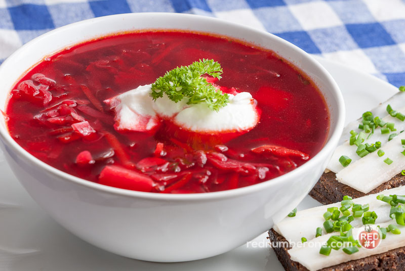

BORSH
Ingridients: voda, bravčové mäso, zemiaky, červená repa, mrkva, cibuľa, kapusta, paradajkový pretlak,slnečnicový olej, kyselina citrónová, soľ, bobkový list, bylinky
Najprv uvarte vývar. Do hrnca nalejte 1,5-2 litre vody. Pridajte mäso a dajte na stredný oheň. Pred varením odstráňte penu. Hneď ako vývar zovrie, prikryte ho pokrievkou a varte na miernom ohni hodinu a pol.
Medzitým pripravte pečené mäso. Ošúpte repu, mrkvu a cibuľu. Repu nastrúhajte na hrubom strúhadle a mrkvu na strednom strúhadle. Cibuľu nakrájajte na kocky.
Na panvici rozohrejte olej na strednom ohni, pridajte cibuľu a mrkvu a smažte 5 minút. Potom pridajte červenú repu (môžete ju pokvapkať kyselinou citrónovou alebo pokvapkať čerstvou citrónovou šťavou - tak bude boršč naozaj červený). Zeleninu smažte ďalších 5 minút, pridajte paradajkový pretlak, premiešajte a smažte ďalších 5-7 minút.
A teraz uvarte samotný boršč. Mäso vyberte z vývaru a kým chladne, pridajte do vývaru nakrájanú kapustu. Po 5-10 minútach pridajte zemiaky nakrájané na pásiky. Oddeľte mäso od kosti a nakrájajte ho na kocky. Mäso vráťte do boršču, osoľte ho a pridajte pečienku. Boršč premiešajte, pridajte bobkový list a nadrobno nasekané bylinky, prikryte a varte ďalších 5-7 minút.
Boršč podávajte s kyslou smotanou a bylinkami.

POLIEVKA S MÄSOVÝMI GUĽÔČKAMI
Ingridients: mleté kuracie mäso, zemiaky, cibuľa, mrkva, cesnak, sladká paprika, bobkový list, rafinovaný slnečnicový olej, cestoviny, soľ, korenie
Zemiaky ošúpte a nakrájajte na požadované kúsky. Nalejte vodu a postavte na sporák. Medzitým začnite formovať mäsové guľky tak, že ich vložíte do vody.
Pripravte dresing. Cibuľu, cesnak, mrkvu a papriku nakrájajte na kocky. Smažte na slnečnicovom oleji.
Do polievky dajte dresing. Varte niekoľko minút, kým sa zemiaky a mäsové guľky neuvaria. Pridajte cestoviny a varte, kým nie sú hotové. Dochuťte soľou, korením a bobkovým listom.
Polievku s mäsovými guľkami podávajte horúcu.
TEKVICOVÁ KRÉMOVÁ POLIEVKA
Ingridients: tekvica, zemiaky, mrkva, cibule, krém 20%, rozpustené maslo, soľ, muškátový oriešok (nastrúhaný), provensálske bylinky, mleté čierne korenie, voda
Tekvicu a mrkvu ošúpeme, nakrájame na väčšie kúsky a vložíme do hrnca. Zeleninu zalejte vodou a postavte na oheň. Po zovretí vody varte zeleninu 25-30 minút. Pripravenosť zeleniny sa dá pochopiť podľa jej mäkkosti.
Cibuľu ošúpeme a nakrájame na malé kocky. Na panvici rozohrejte rozpustené maslo, vložte cibuľu a smažte ju, kým nie je priehľadná. Do hrnca so zeleninou pridajte cibuľu a osoľte ju. Hmotu rozmixujte mixérom do hladka.
Nakoniec prilejte smotanu, bylinky a mleté čierne korenie. Premiešajte, priveďte do varu a stiahnite z ohňa. Polievku podávajte s ďalšou porciou smotany.